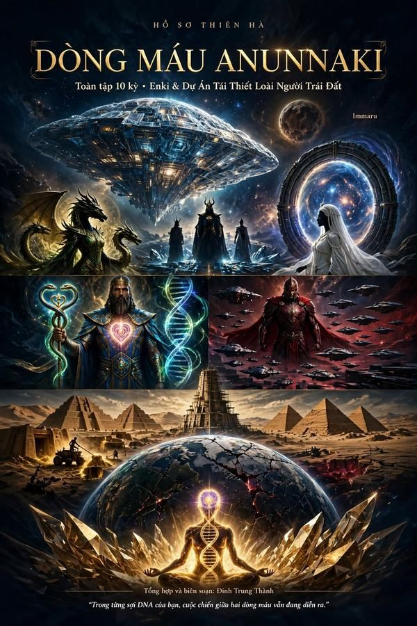
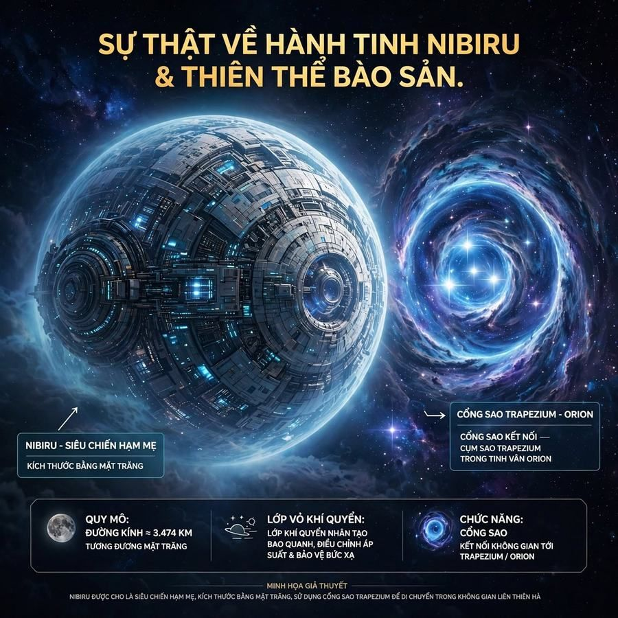
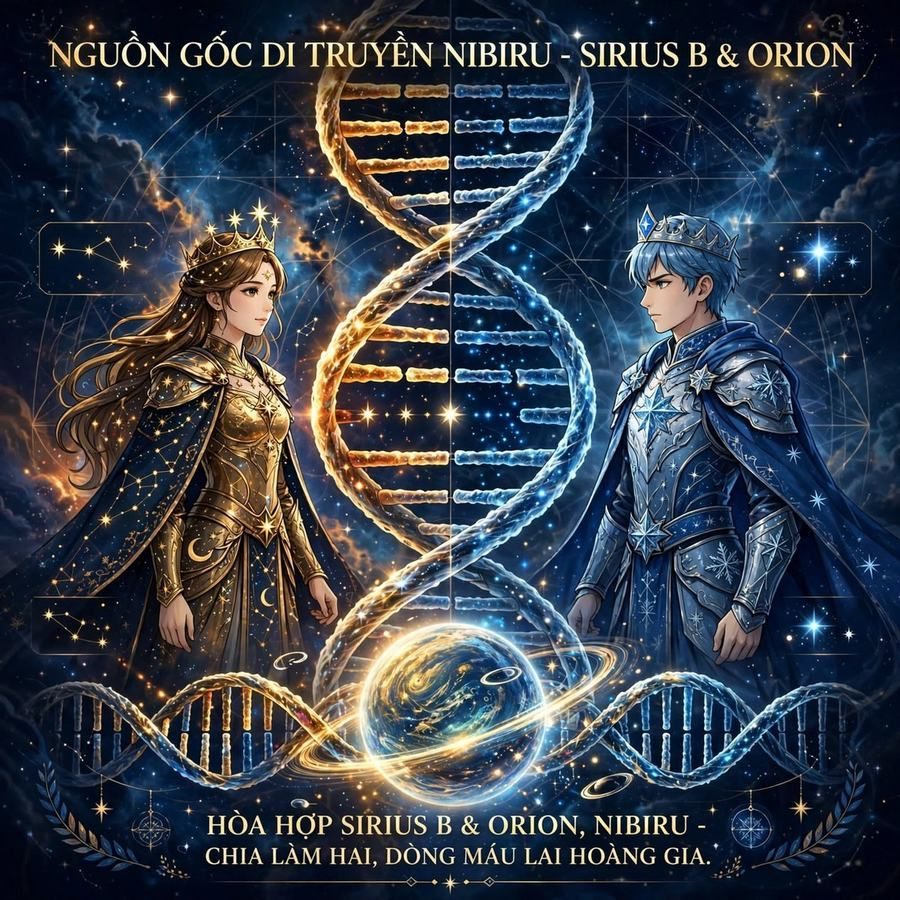
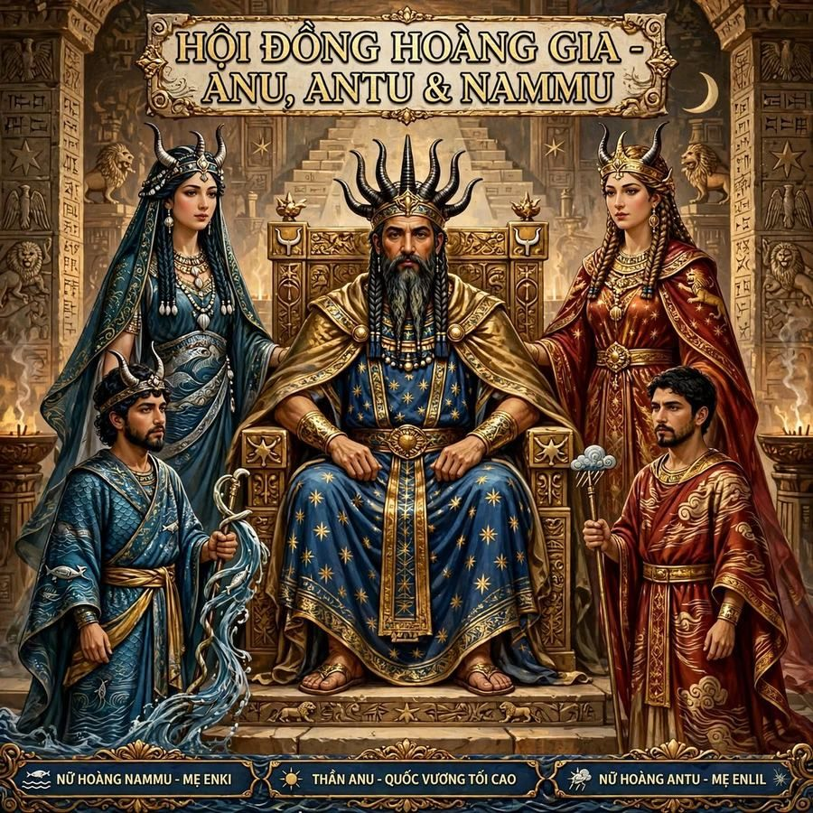
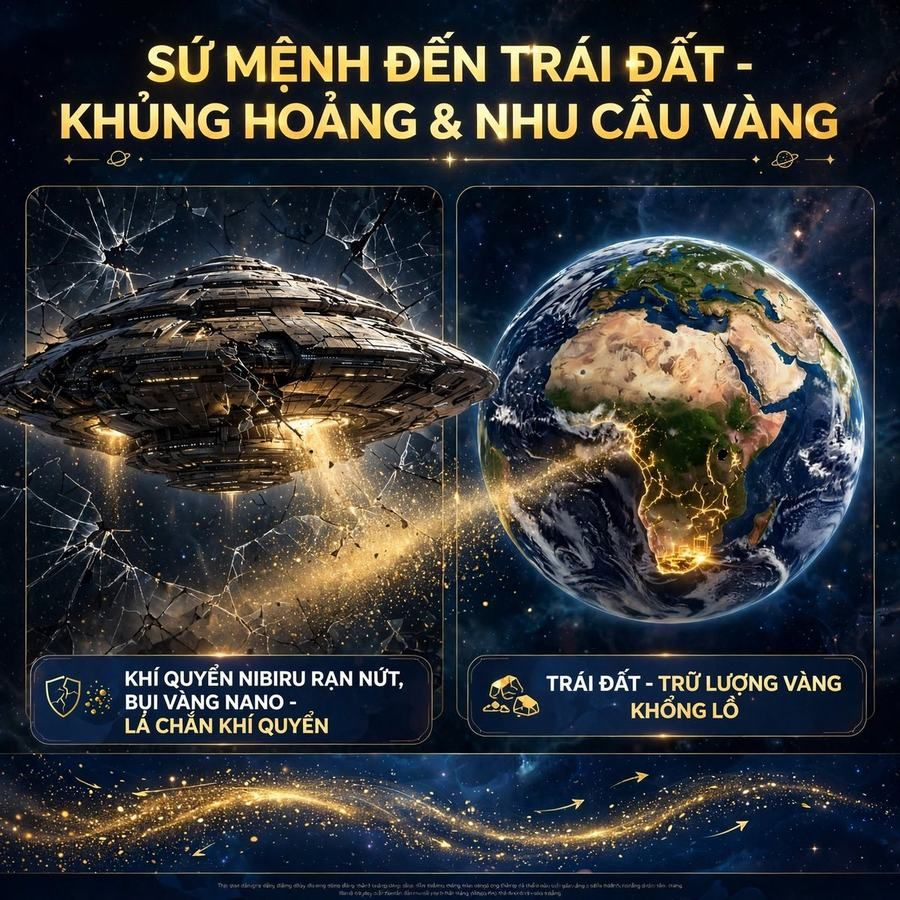
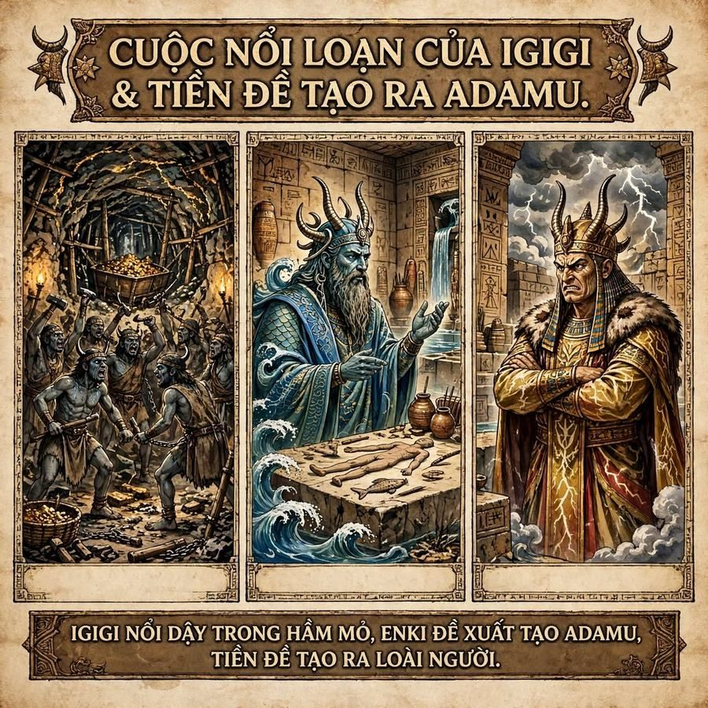
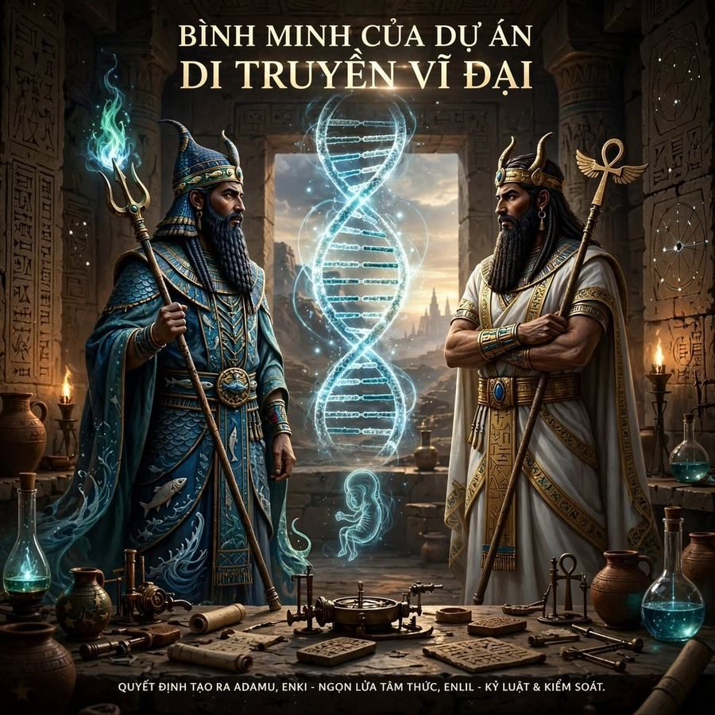

Trang chủ / Chuyên đề 3: Dòng Máu Anunnaki / Kỳ 21
Chuyên đề 3 · Kỳ 21 / 90
NGUỒN GỐC HÀNH TINH NIBIRU & HỘI ĐỒNG HOÀNG GIA ANUNNAKI (THẦN ANU, ANTU, NAMMU)

Sau khi khép lại chuyên đề 2 với bức tranh Cuộc Đại Di Cư vĩ đại từ nôi Lyra ra khắp dải Ngân Hà, chúng ta chính thức bước sang chuyên đề 3: Dòng Máu Anunnaki, Enki & Dự Án Tái Thiết Loài Người Trái Đất — một hành trình giải mã truyền thuyết cổ đại, di sản di truyền thiêng liêng và những bí ẩn lớn nhất về sự hình thành của nhân loại trên Trái Đất.
Trong mọi truyền thuyết cổ Sumeria, Babylon và các văn bản đất sét cổ xưa nhất, cái tên Anunnaki luôn xuất hiện như những "vị thần từ bầu trời giáng xuống". Họ là ai? Quê hương Nibiru của họ thực chất là một hành tinh lang thang hay một siêu chiến hạm di động khổng lồ? Sự kết hợp di truyền giữa hai dòng họ hoàng gia Sirius B và Orion đã khai sinh ra dòng tộc Anunnaki ra sao? Và cấu trúc quyền lực của Hội đồng Hoàng gia Anunnaki với Thần Anu cùng các Nữ hoàng Antu và Nammu đã đặt tiền đề cho cuộc chiến quyền lực vĩ đại giữa hai người con Enki và Enlil như thế nào?
Hãy cùng dấn thân vào Kỳ 1: Nguồn Gốc Hành Tinh Nibiru & Hội Đồng Hoàng Gia Anunnaki để mở ra chương đầu tiên của thiên sử thi tráng lệ này!
✦ ✦ ✦1. SỰ THẬT VỀ HÀNH TINH NIBIRU & THIÊN THỂ BÀO SÃN NGUYÊN THỦY
Trong các nghiên cứu cổ đại thô, Nibiru thường được miêu tả như một "hành tinh thứ 12" hay một hành tinh lùn lang thang có quỹ đạo hình elip kéo dài quay quanh Mặt Trời mỗi 3.600 đến 4.000 năm. Tuy nhiên, các hồ sơ giải mật thiên hà tiết lộ một sự thật khoa học siêu chiều hoàn toàn khác biệt.
A. Xuất Thân Từ Chiều Không Gian Song Song
- Xuất Thân Từ Chiều Không Gian Song Song: Quê hương gốc của Anunnaki nằm trong một dải chiều không gian song song, thuộc một hệ sao đôi.
- Ngôi Sao Lùn Nâu Immaru: Ngôi sao chính của hệ sao này được đặt tên là Immaru — một ngôi sao lùn màu nâu chứa nhiều hành tinh và vệ tinh xung quanh. Hành tinh thứ sáu trong hệ sao Immaru có tên địa phương nguyên thủy là Ashtari.
B. Nibiru Thực Chất Là Siêu Chiến Hạm Mẹ (Mothership)
- Không Phải Hành Tinh Lang Thang Cơ Học: Một hành tinh trôi dạt trong không gian sâu thẳm cách xa ngôi sao mẹ sẽ nhanh chóng trở thành một tảng đá băng giá cằn cỗi và không thể tự duy trì sự sống sinh học.
- Tàu Mẹ Khổng Lồ Kích Thước Bằng Mặt Trăng: "Nibiru" thực chất là tên gọi của một siêu chiến hạm đĩa/hình cầu nhân tạo khổng lồ có kích thước gần bằng Mặt Trăng. Con tàu này được bọc bởi lớp vỏ khí quyển nhân tạo, tích hợp lò phản ứng tinh thể và các hệ thống sinh thái hoàn chỉnh, hoạt động như một thành phố di động liên sao.
- Cổng Sao Cụm Trapezium (Orion): Để di chuyển giữa chiều không gian song song và dải Ngân Hà của chúng ta, tàu Nibiru sử dụng Cổng Sao siêu chiều tại Tinh vân Orion (cụm Trapezium) — nơi người Anunnaki từng nắm quyền làm chủ trong thời kỳ cổ đại.

2. NGUỒN GỐC DI TRUYỀN NIBIRU: SỰ HÒA HỢP GIỮA SIRIUS B VÀ ORION
Một bí mật lớn về bản chất di truyền của Anunnaki chính là nguồn gốc lai (Hybrid) đặc biệt của họ.
A. Cuộc Hôn Nhân Liên Minh Giữa Hai Hoàng Gia Thiên Hà
- Căng Thẳng Lịch Sử Giữa Sirius B Và Orion: Hàng triệu năm trước, các thuộc địa hình người tại Sirius B và các lực lượng Bò sát tại chòm sao Orion thường xuyên xảy ra xung đột lãnh thổ gay gắt.
- Độc Chiêu Hôn Nhân Ngoại Giao: Để lập lại hòa bình bền vững, một cuộc hôn nhân ngoại giao lịch sử đã được thiết lập giữa hai dòng dõi hoàng gia tối cao:
- Phía Nữ (Mẫu Hệ Orion): Đại diện bởi một Công chúa/Nữ hoàng thuộc dòng dõi Bò sát Hoàng gia Orion.
- Phía Nam (Phụ Hệ Sirius B): Đại diện bởi một Hoàng tử/Đức vua thuộc dòng người dạng người (Humanoid) Sirius B.
B. Ý Nghĩa Tên Gọi "Nibiru" Và "Anunnakene"
- Bản Chất Dòng Máu "Chia Làm Hai": Hậu duệ được sinh ra từ cuộc hôn nhân liên minh này mang sự kết hợp di truyền độc đáo giữa dải gen Bò sát Orion và dải gen Hình người Sirius B.
- Cổ Ngữ "Nibi-Ru": Trong cổ ngữ Orion, từ "Nibiru" (hay Nibi-Ru) có nghĩa nguyên thủy là "Sự chia sẻ giữa hai" hay "Chia làm hai" (Divided amongst two) — ám chỉ chính bộ tộc lai giữa hai dòng máu hoàng gia.
- Tên Gọi "Anunnakene": Các thế lực Bò sát Orion gọi chủng tộc lai mới này là Anunnakene (mà sau này gọi ngắn là Anunnaki), trong ngôn ngữ cổ nghĩa là "Những sinh mệnh có vẻ ngoài giống con người" (Human-like). Về diện mạo bên ngoài, họ mang hình thái dạng người cao lớn (từ 2,5m đến 4m), da sáng hoặc ngọc trai, nhưng bên trong cấu trúc sinh học lại mang các đặc tính nội tiết và di truyền Bò sát chiếm ưu thế.

3. HỘI ĐỒNG HOÀNG GIA ANUNNAKI VÀ TAM GIÁC QUYỀN LỰC: ANU, ANTU & NAMMU
Cấu trúc chính trị tối cao của văn minh Anunnaki được điều hành bởi Hội Đồng Hoàng Gia đứng đầu bởi Thần Anu.
A. Thần Anu — Quốc Vương Tối Cao Của Nibiru
- Vị Vua Tối Cao: Thần Anu là nhà lãnh đạo tối cao của toàn bộ xã hội Anunnaki, người nắm giữ quyền quyết định mọi chiến dịch bành trướng, khai thác tài nguyên và ngoại giao liên sao.
- Hai Cuộc Hôn Nhân Định Mệnh: Để duy trì sự cân bằng quyền lực chính trị trong tộc Anunnaki và với các minh bang bên ngoài, Thần Anu đã thành hôn với hai Nữ hoàng đại diện cho hai dòng di truyền khác nhau.
B. Nữ Hoàng Nammu (Dòng Bò Sát Dragon Queen) & Sự Ra Đời Của Hoàng Tử Enki (Ea)
- Nữ Hoàng Nammu: Là vị Nữ hoàng mang dòng máu Bò sát Hoàng gia Orion (Dragon Queen) kết hôn liên minh với Anu.
- Hoàng Tử Enki (Ea / N-Ki): Enki là con trai đầu lòng (Firstborn son) của Thần Anu với Nữ hoàng Nammu. Do thừa hưởng di truyền từ người mẹ mang dòng máu Dragon Queen cùng sự kết nối với trí tuệ Paa-Taal, Enki sở hữu trực giác vượt trội, tình yêu thương vạn vật và trở thành một Bậc Thầy Kỹ Sư Di Truyền & Giả Kim Thuật Tối Cao. Tên nguyên thủy của ông là Ea (nghĩa là "Bậc thầy về chất lỏng/di truyền"), sau này được gọi là Enki ("Chủ nhân của Trái Đất").
C. Nữ Hoàng Antu (Dòng Người Humanoid) & Sự Ra Đời Của Hoàng Tử Enlil (Yu)
- Nữ Hoàng Antu: Là vị Nữ hoàng mang dòng máu thuần dạng người (Humanoid) và là em gái cùng cha khác mẹ với Thần Anu.
- Hoàng Tử Enlil (Yu / N-Lil): Enlil là con trai của Thần Anu với Nữ hoàng Antu. Do Antu là Nữ hoàng chính thức mang dòng máu hoàng gia nội bộ, theo luật thừa kế Anunnaki, Enlil được coi là Người Thừa Kế Hợp Pháp Ngai Vàng (Rightful Heir) dù sinh sau Enki. Tên thật của ông là Yu (nghĩa là "Ngọn Lửa"), và danh hiệu Enlil có nghĩa là "Chủ nhân của Sức mạnh/Không khí". Enlil mang tư tưởng quân sự khắt khe, coi trọng kỷ luật, sự thống trị và phân cấp tuyệt đối.

4. SỨ MỆNH ĐẾN TRÁI ĐẤT: KHỦNG HOẢNG NGHUYÊN TỬ NIBIRU & NHU CẦU VÀNG
Nguyên nhân đưa hạm đội Anunnaki đặt chân xuống Trái Đất cách đây khoảng 450.000 đến 372.000 năm xuất phát từ một cuộc khủng hoảng sinh tồn tàn khốc trên chính quê hương họ.
A. Sự Suy Hủy Tầng Khí Quyển Tàu Mẹ Nibiru
- Tổn Thương Sau Chiến Tranh Thiên Hà: Sau các cuộc đại chiến liên sao với các thế lực tiêu cực trong quá khứ, bầu khí quyển và lá chắn từ trường của tàu mẹ Nibiru bị rạn nứt nghiêm trọng. Bức xạ vũ trụ độc hại tràn vào gây ra bệnh tật, mất mùa và nguy cơ diệt vong cho cư dân Anunnaki.
B. Giải Pháp Bụi Vàng Nano (Gold Dust Shielding)
- Vàng Khởi Nguyên Chữa Lành Khí Quyển: Các nhà khoa học Anunnaki phát hiện ra rằng: Việc phát tán các hạt bụi vàng nguyên tử tinh khiết (Monoatomic Gold Dust) vào tầng khí quyển sẽ tạo ra một lá chắn phản xạ lại bức xạ vũ trụ, giúp chữa lành và ổn định môi trường sống của họ.
- Tìm Kiếm Vàng Tại Trái Đất (Terra): Các đĩa bay trinh sát Anunnaki đã quét thấy dải từ trường Trái Đất chứa trữ lượng vàng tự nhiên khổng lồ dưới lòng đất (đặc biệt tại khu vực Nam Phi và Lưỡng Hà). Thần Anu lập tức hạ lệnh cử hạm đội viễn chinh tiến về Trái Đất để khởi công các mỏ khai thác vàng!

5. CUỘC NỔI LOẠN CỦA CHỦNG NGƯỜI IGIGI VÀ TIỀN ĐỀ TẠO RA LOÀI NGƯỜI (ADAMU)
Khi hạm đội Anunnaki hạ cánh xuống Trái Đất, họ ban đầu không tự tay đào mỏ mà sử dụng một chủng tộc hạ cấp làm lực lượng lao động.
A. Cuộc Sống Nô Lệ Của Chủng Bò Sát Hạ Cấp Igigi
- Chủng Tộc Igigi ("Người Quan Sát"): Trước khi loài người xuất hiện, Anunnaki đã khuất phục và bắt giam một dòng Bò sát hạ cấp (người Igigi) làm lao dịch suốt 2.500 năm trong các hầm mỏ nóng bức sâu hàng kilômét dưới lòng đất.
B. Cuộc Nổi Loạn Đột Ngột Tại Hầm Mỏ Nam Phi
- Sự Phẫn Nộ Của Igigi: Khoảng 250.000 năm trước Công nguyên, điều kiện làm việc cực đoan trong lòng đất đã đẩy các công nhân Igigi đến điểm bùng nổ. Họ cùng nhau nổi dậy, đốt phá công cụ khai thác và kéo đến bao vây đại bản doanh của Enlil!
- Bế Tắc Chính Trị & Giải Pháp Của Enki: Enlil muốn dùng quân sự trấn áp đẫm máu, nhưng Hoàng tử Enki — với góc nhìn của một nhà khoa học từ bi — đã can thiệp và đề xuất với Hội đồng Hoàng gia Anu một giải pháp đột phá: Không dùng Igigi nữa, mà hãy lai tạo ra một chủng tộc công nhân sinh học mới (Adamu) có khả năng lao động và tự duy trì sinh học trên Trái Đất!

6. LỜI KẾT KỲ 1: BÌNH MINH CỦA MỘT DỰ ÁN DI TRUYỀN VĨ ĐẠI
Kỳ 1 của chuyên đề 3 khép lại khi quyết định lịch sử tạo ra Adamu được Hội đồng Anu thông qua.
Nhưng cuộc chiến ngầm giữa Enki (người muốn thổi vào Adamu ngọn lửa tâm thức, luân xa tim và tiềm năng 12 chuỗi DNA Paa-Taal) và Enlil (người muốn biến Adamu thành chủng tộc nô lệ ngoan ngoãn hoàn toàn không có cảm xúc) chuẩn bị bùng nổ khốc liệt! ✦ ✦ ✦ ✦
